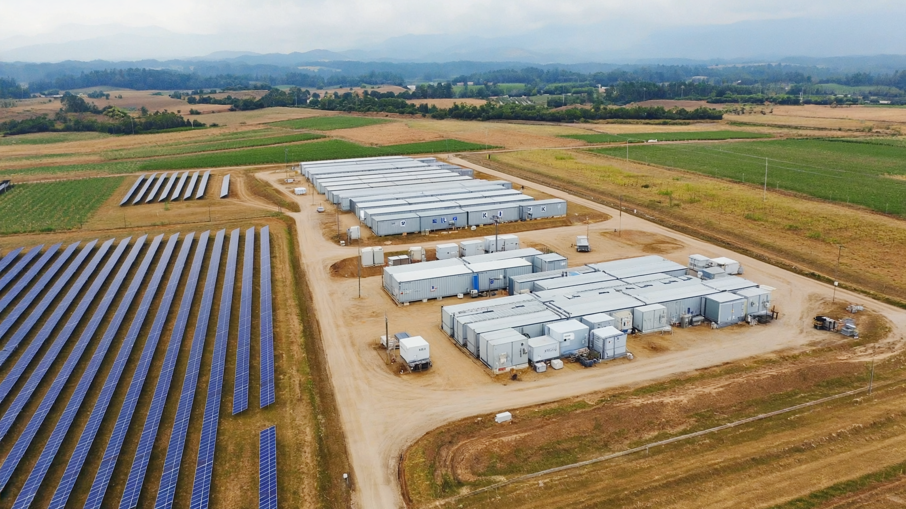

Блог
Енергоефективність для бізнесу
Аналітика, яка допомагає приймати енергетичні рішення на рівні бізнес-моделі, а не окремого обладнання
Редакційний блок LogicPower пояснює, як СЕС, системи накопичення, резервне живлення та керування навантаженням впливають на OPEX, безперервність процесів, тарифну передбачуваність і декарбонізацію активу.
Ключові теми
ROIокупність і cash flow
Тарифихеджування та сценарії
CO₂декарбонізація активу
Стійкістьбезперервність бізнесу
Для кого
- власники бізнесу та CEO
- CFO та фінансові директори
- технічні директори, енергоменеджери, інженерні команди
- девелопери, інтегратори та партнерські команди
Результат
Блог скорочує шлях від першого інтересу до предметної розмови про проєкт: ринок швидше розуміє економіку рішення, сценарій впровадження та очікуваний ефект.
